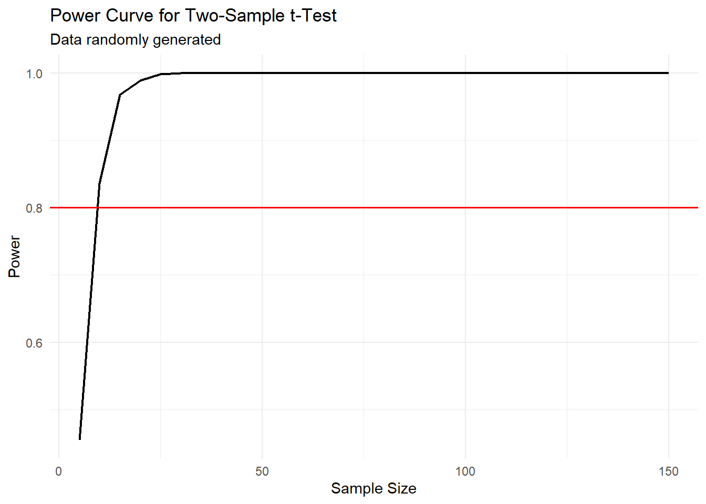

In statistics, power test analysis provides valuable insight into the design and interpretation of a study. By quantifying the likelihood of detecting true effects in experimental data, power analysis becomes an essential tools to assist in determining the sample size needed to detect a meaningful effect within a desired level of confidence. In this analysis, we will perform a power analysis in the context of a two-sample t-test, employing a randomly generated data to simulate a real-world scenario.
Statistical Analysis through Random Samples
For this project, simulated observations using a normal distribution format was implemented, what give us a solid groundwork for conducting a comparative analysis between two distinct groups. Furthermore, by making use of a two-sample t-test, the aim was to assess the presence of any significant differences between these groups and also discover the underlying patterns and dynamics inherent within the data.
Essence of Power Tests
A power test was implemented to assess the sensitivity of the t-test in detecting a true difference between the groups. This test is significant due to the fact that a study with low power may fail to detect real effects, leading to incorrect conclusions or wasted resources. By conducting a power analysis, we can estimate the sample size needed to achieve a desired level of power, ensuring that our study has a high probability of detecting true effects if they exist.
Essence of t-tests
The t-test is a statistical test used to determine if there is a significant difference between the means of two groups. It assesses whether the observed difference between the group means is larger than would be expected by random chance alone. The use t-tests in this power analysis was due to the fact that these tests are designed for comparing means between two groups.
set.seed(345)#random datagroup1 <-rnorm(30, mean =17, sd =2) group2 <-rnorm(30, mean =20, sd =2) mean1 <-mean(group1)mean2 <-mean(group2)n_per_group <-30num_simulations <-1000#t-testt_test <-function(n1, n2, mean1, mean2, sd1, sd2) { sample1 <-rnorm(n1, mean1, sd1) sample2 <-rnorm(n2, mean2, sd2) p_value <-t.test(x = sample1, y = sample2)$p.valuereturn(p_value <0.05)}power <-vector("double", num_simulations)for (i in1:num_simulations) { sig <-t_test(n_per_group, n_per_group, mean1, mean2, sd(group1), sd(group2)) power[i] <- sig}power <-mean(power)power_curve <-vector("double", 30)sample_sizes <-vector("double", 30)for (j in1:30) { n <-5* j sig <-vector("logical", num_simulations)for (i in1:num_simulations) { sig[i] <-t_test(n, n, mean1, mean2, sd(group1), sd(group2)) } power_curve[j] <-mean(sig) sample_sizes[j] <- n}plotdata <-tibble(n_per_group = sample_sizes, power = power_curve)ggplot(plotdata, aes(x = n_per_group, y = power)) +geom_line(lwd=0.8) +#lwd defines the thickness of the linesgeom_hline(yintercept =0.80, color ="red", lwd=0.6) +labs(x ="Sample Size", y ="Power", title ="Power Curve for Two-Sample t-Test", subtitle ="Data randomly generated") +theme_minimal()

Graph analysis
In this graph we can observe that the power (y-axis) represents the probability of correctly rejecting the null hypothesis when it is false, in this case, when there is a true difference between the groups. The red horizontal line indicates a power level of 0.80, which is a benchmark for estimating the sample size needed in order to ensure the study will detect the effects if there is any.
Conclusion
In this exploration of the power testing, I could better understand its significant role in study design and interpretation. By estimating the sample size needed to detect meaningful effects, power analysis ensures the reliability of research outcomes and can also avoid waste of funds. By making use of a two-sample t-test with randomly generated data, I aimed to identify significant differences between groups and assess the t-test’s sensitivity.
Through this project, I gained insight about the importance of simulations and their relevance in real-life scenarios.
Things I learned while testing the code
In this project, I used set.seed() function to generate the random data. After multiple rounds of testing and additional research, I discovered that this function plays a crucial role in maintaining the reproducibility of our results. This means that while the specific data points within each group may vary slightly due to random variation, the overall pattern and properties of the data will remain the same. It’s important to note that without setting the seed, each time we run the code, we introduce a new source of randomness into the data generation process. As a result, each execution would generate a different random data, leading to variations in the outcomes of our power analysis and also in the plots.
Extra
After conducting multiple simulations with different parameter values, it became evident that as the means of the two groups gets closer, the power curve tends to exhibit a more gradual slope rather than a steep incline, as showed in the first graph. After some research and pondering about the meaning of this, I came to the conclusion that this observation suggests that when the means of the groups approach parity, the t-test becomes less sensitive in detecting these smaller differences, leading to a less pronounced increase in statistical power.
The impact of proximity in mean values between groups is evident and can be observed in the graph below. The simulation that produce the following graph made use of a random data generation that have means with only one-unit difference.